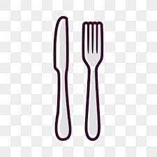
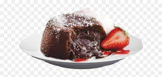
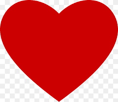
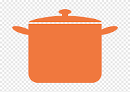

Welcome fellow foodie !!

"Welcome to my food blog! My name is Rehab Khaleel, and I'm a self-proclaimed foodie with a
passion for cooking and eating. I'm also a bit of a goofball, so I like to add a little humor to my
recipes.

I believe that food should be fun and delicious. I don't believe in following strict diets or
depriving
yourself of your favorite foods. I think it's okay to indulge every once in a while, as long as you
do
it in moderation.

In fact, I think that food is even better when it's funny. There's nothing like a good laugh to make
a
meal even more enjoyable. So if you're looking for recipes that are both tasty and funny, then
you've
come to the right place.
I'm not a professional chef, but I've been cooking for as long as I can remember. I started out by
helping my mom in the kitchen, and I quickly developed a love for all things food. I love
experimenting
with new recipes, and I'm always looking for ways to make my food more creative and fun.

I also love to share my love of food with others. I'm always hosting potlucks and dinner parties,
and I
love to see the look on people's faces when they try one of my recipes for the first time.
So if you're looking for a blog that will make you laugh, make you hungry, and make you want to
cook,
then you've come to the right place. Welcome to my food blog!"